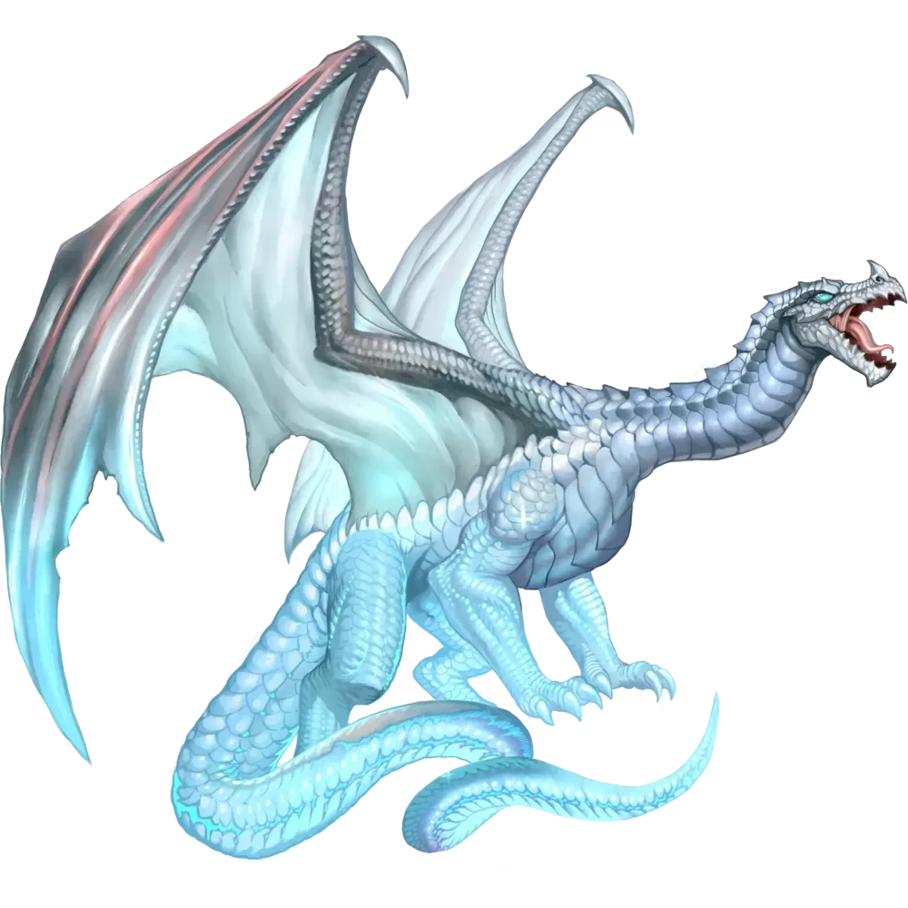
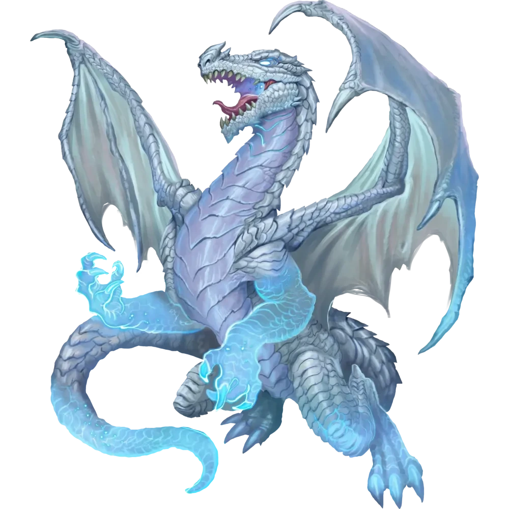

各年龄段数据卡
由于体内奔涌着强大的传送魔法，相位龙有时对现实――无论是凡世本身，还是栖居其中的芸芸众生――都缺乏真切的实感。毕竟，当你身体的一部分时不时根本不在同一个世界里时，确实很难与这个世界建立紧密的归属感。这导致部分相位龙将身边生灵视若虚幻泡影，毫不在意其死活；而另一些相位龙则会拼尽全力在世间留下切实可见的印记――无论流芳百世还是遗臭万年――只为证明自己真切地属于这个世界。 冷漠麻木的相位龙在掠夺与破坏时往往连眼皮都不会眨一下，因为在它们眼中，受自己伤害的对象根本算不上完全“真实”。这种唯我论式的世界观使它们在许多方面比纯粹心怀恶意的巨龙更加危险――它们未必是传统意义上的“邪恶”，只是看待世界的方式与众生截然不同。 艾莉西亚・无处狡黠机敏的相位龙艾莉西亚・无处是一位技艺超群的怪盗与潜入大师。她自称世上没有任何大门能拦住她的去路，也没有任何锁具能挫败她的谋划。无论是坐拥封地的王公贵族，还是疑神疑鬼的大法师，都曾沦为她的失主，任凭她如入无人之境般进出戒备森严的保险库与秘藏室。曾有人试图在珍宝四周架设力场屏障、铺设厚重铅板来阻挡艾莉西亚・无处，但这头聪慧过人的相位龙总能绕开一切防范措施，将猎物收入囊中。没人清楚她究竟是如何做到的，不过许多人怀疑除了登峰造极的潜行技艺之外，她还掌握着极为高深的魔法。在被缉拿归案之前，没有任何一件财宝敢说能逃过艾莉西亚・无处之手。 相位龙的一个共同特征在于，几乎所有个体都渴望通过在世间留下长久影响来证明自己曾经存在过。有些相位龙会精心策划错综复杂的邪恶阴谋，只为在史册上强行镌刻自己的名字；另一些则会致力于匡正当地社群中的重大不公，力求留下一份泽被后世的不朽遗产。 相位龙的巢穴往往被建造得宏伟繁复、足以在主人寿尽之后依然屹立漫长岁月，其中储藏的奇珍异宝也常常超越数个国家国库的总和――无论坚固建筑还是巨额财富，都能赋予它们某种恒久不变的实感，而不像它们自身闪烁不定的相位那样稍纵即逝。在营造理想巢穴时，许多相位龙会充分顺应自身独特天性，修筑刺穿多重位面隔膜的回廊与厅室。有些相位龙会在表层巢穴内部的异次元空间中嵌套整座第二巢穴，以此迷惑并困住误闯第一层巢穴的入侵者；另一些相位龙的巢穴中则设有唯有借道以太位面、穿过数十尺厚实岩层或精铁方能抵达的秘室，根本不存在可供寻常生物深入真正腹地的相连通道。如此一来，妄图盗宝者与屠龙者往往在搜刮完外围后便自以为已看尽巢穴全貌、心满意足地离去，殊不知相位龙真正的宝库自始至终分毫未损。 犬族盟友重信守义的相位龙往往能与聪慧的魔法犬群及其他同样擅长在物质世界闪烁出没的动物结下深厚情谊，在传送魔法尤为活跃的地域更是如此。举目无亲的年幼相位龙甚至可能被这类犬群收养，学习它们的生活习性与狩猎技巧。即便多年过去，当这头相位龙最终离开族群、踏上属于自己的旅途之后，它依然随时能够仰仗昔日犬族家人们坚定不移的支援。 与其他大多数异类龙相比，相位龙的性格往往更加外向，因为它们迫切需要获得真切可感的现实体验（至于那些更具反社会倾向的相位龙，则是源于将他者视作虚幻之物的心理）。富有利他精神的相位龙会主动寻访志同道合的个人与团体，尤其是那些致力于革除社会弊病的组织。它们常常在这类社群中跻身领导地位，少数个体甚至在既定目标达成之后依然长期执掌大权。偶尔，倘若这样一头相位龙把持权位长达数十年（乃至数个世纪），便可能最终被权力腐化，反过来折磨或压迫自己当初曾伸手拯救的人们。 在所有巨龙之中，相位龙死后化作虚体亡灵（如幽灵与缚灵）的概率名列前茅。它们常常回到生前的藏身处，执拗地继续生前那场旨在留下不朽遗产、“让世人铭记自己”的渺茫追求。极具讽刺意味的是，这些亡灵巨龙往往成了世间最令人闻风丧胆的恐怖存在――死在它们爪下的英雄与屠龙者尸骸累累，反倒真为它们铸就了一段以自己为头号恶魔的骇人传说。死后的累累恶行将它们生前或许曾做过的善举（倘若真有的话）冲刷得一干二净。若非复生为亡灵时伴随的精神剧痛早已覆盖了它们昔日的人格，这些巨龙倘若泉下有知，看到如今的局面定会惊骇莫名。 闪烁微光与奇珍力求在周遭世界留下自身印记的相位龙，往往拥有令人叹为观止的宏伟宝库，其中摆满了璀璨宝石与艺术珍品，尤以举世无双的孤品奇珍为最。另一些相位龙则会专门挑选两类极端物品：要么轻便小巧、易于随身带入另一重维度；要么沉重无比、绝不至于在巨龙意外滑入偏移相位时被一并错吸进去。 永恒漫游者奥德赛纳提斯太古龙奥德赛纳提斯如今必定仍活在世间的某个角落……或者说，事到如今，赌他还活着显然是明智得多的选择。因为在此之前，他至少已经有十几次下落不明并被世人推定身亡――最早的一次大失踪甚至可以追溯到久远的青年时代：当时他正在参加一场相位龙同族聚会，结果就在众目睽睽之下凭空消失，没有留下半点踪迹或去向线索。 当年他第一次失踪时，在场的其他相位龙理所当然地认定他已永远迷失――多半是体内传送魔法骤然失控发作，将他抛去了某个未知存在位面或现实相位。即便目的地并非对活物充满恶意的绝境，对于当时尚且年少青涩的奥德赛纳提斯这样一头青年相位龙而言，想要平安返乡也希望渺茫。 然而，他却打破一切常理，毫发无损地归来了。原来他那第一趟意外之旅将他一头抛进了凶险莫测的以太位面深处――在那里，重重恐惧发酵凝结为危险的以太生灵，体型庞大无匹的以太利维坦在远方发出哀婉悠长的鸣唱，为神秘莫测的异界平添一抹孤寂苍凉。 出乎所有人意料的是，奥德赛纳提斯巧妙地挑拨那些追猎自己的异界怪物自相残杀。他谎称自己同时受雇于多个敌对派系，令猜忌与恐惧彼此滋长，最终引得当地盘踞者陷入了一场混战。由于他每次都使用不同化名，各方势力直到木已成舟才发觉自己遭人愚弄，而他的真名始终滴水不漏地藏在心底。最后，当由一头强大萨基尔邪魔统领的获胜派系终于拼凑出真相、企图找他寻仇之时，他又设法与一头以太利维坦结为好友，搭着这位巨兽同伴的顺风车扬长而去，只留下一众仇敌在身后跳脚痛骂他的假名――针对假名降下的诅咒威力大打折扣，使他得以全身而退、毫发无伤。 不用说，在这场非自愿的异界羁旅落幕之时，看到奥德赛纳提斯活蹦乱跳地现身，所有人都惊掉了下巴。不过单凭这一遭奇遇，还不足以为他赢得“永恒漫游者”的绰号。史料记载对此并不十分确切――或许是在他第三次卷入跨位面大乱局并历经漫游归来之后，又或许是第四次、第五次之后。总之到了某个时候，这个头衔便流传开来，并自此伴随他一生。随着他的失踪记录不断累加、带回来的漫游奇谭也愈发天马行空，几乎没人会质疑他配不上这一称号。 眨眼即逝年长而老练的相位龙懂得如何将自身失控的传送特质转化为战斗优势。举例而言，只要能诱使对手眨一下眼或是移开视线，它们便能借着这瞬息的分神，配合突如其来的传送或相位偏移悄然远遁，令敌人根本无从追索。凭借这一手绝活，它们能够娴熟运用游击战术，逐步消磨更为棘手的强敌。 然而，奥德赛纳提斯究竟有何与众不同之处，才会比其他相位龙更加频繁而彻底地经历这种跨界偏移？钻研此类现象的学者提出了一种假说：一切都要归结于他体内狂暴传送魔法的特殊性。“永恒漫游者”身上似乎存在着某种特质，使他格外容易被卷入跨位面的乱局之中，甚至冥冥中指引着他落入纷争即将爆发的复杂漩涡；而按照同一套假说，这股冥冥中的引导力量或许也在暗中助他一次次化险为夷、上演绝妙脱身。 不过，另一种针锋相对的假说也随之兴起：倘若这一切奇谭根本都是奥德赛纳提斯编造出来的呢？万一他只是先表演一出凭空消失的戏码，找地方躲藏一阵子，随后再带着满肚子杜撰出来的异界游记现身吹嘘呢？事到如今，他已是如此苍老而强大，谁又敢当面质疑他？至于真相的证据，大概只散落在诸位面之间了…… 以太幻视部分永光相位龙声称，在自身相位闪烁尤为强烈的时刻，它们会在视野边缘瞥见潜伏窥伺的诡异生物。它们从来无法看清那些身影的具体细节，不过有些相位龙描述对方长着密密麻麻的节肢或是不断扭动的触须。少数相位龙在初次瞥见这类存在后的漫长岁月里会变得愈发神经质，坚信那些黑影正离自己越来越近，一旦对方逼近至触手可及之处，自己的性命便会就此终结。偶尔，这些巨龙果真会在不久后被人发现暴毙身亡，身上却找不到半点可见外伤。至今无人知晓那些神秘生物究竟是什么，甚至无法确定它们是否真的存在。 怪盗访谈：对话艾莉西亚・无处 Word With a Phantom Thief: Interview with Eliscia Nowhere怪盗的立身之本，在于那份肆无忌惮的胆识与自信。正是这种特质驱使他们挑战最凶险的劫案，只为验证自己能否得手；甚至还会提前留下预告函惊动当局，进一步为自己提高难度。 正如聪慧的读者你所料，为了赢得这位或许是世上最杰出怪盗的认可与配合，鄙人也必须以同样大胆直率的行径，证明自己值得她青眼相加。不过，我并不怎么热衷于为了学术研究而以身试法，也没多少把握能靠作案真正引起艾莉西亚・无处的注意或兴趣。体贴的读者，可别发笑！尽管我对自己身为学者的造诣颇为自信，但我也足够谦逊，清楚自己的长处与短板――盗窃实在不是我的天赋所在。即便是鄙人，也不可能样样精通。 所幸，我构思出了一条妙计。以我学者的身份，确实有一件厚颜无耻的大胆之事大可一试，或许这般狂妄之举足以逗乐我的研究对象，勾起她的兴致。 于是，我为此做的准备如下：什么都没准备。我既没有设法证明自己的资历，便直接向艾莉西亚・无处发出了荒唐的访谈邀约，只盼这份厚颜胆魄足以引起她的兴趣。为了增添几分刺激，我约她在某座王国王宫附近的咖啡馆会面――她前不久才刚刚盗走了那座王国的王冠珠宝；我还在信中写明，自己绝不保证这场访谈是不是替王室卫队设下的陷阱。我的计策完全如愿奏效。艾莉西亚・无处准时赴约，向我娓娓道来了许多不可思议（甚至有些几近天方夜谭）的传奇事迹。正如你对这样一位酷爱炫耀的怪盗所期待的那样，她魅力非凡，又是个极出色的讲故事高手。她欣然向我详尽剖析了相位龙那种不受控制的传送魔法，其细致程度远超我此前听闻的任何资料，令我感激不尽。 而既然我不想让她扫兴，我便暗中向王室卫队通风报信，好让他们在会面结束时破门抓人。结果自然不必多说――她把那帮卫兵耍得灰头土脸、颜面扫地！ ――永光贤者卡利赞德雷克斯 |
 相位龙  相位龙 |